SLOOP 3
SLOOP 3 SLOOP 3 for the M-VAVE FM-1
Make music on a pocket groovebox
This guide takes you from switching on to a finished song, then through everything else SLOOP can do. You need to know what a beat and a chord are, and nothing about the FM-1.

Start here
What SLOOP is
The FM-1 is a small synthesizer by M-VAVE with a screen, eight knobs, fourteen buttons and 27 keys. SLOOP 3 is free firmware that replaces its factory software and turns it into a groovebox: an instrument that plays drums, bass and chords together in a loop, while you build the loop up one part at a time.
You use two tools:
- The FM-1 itself, for everything you play and most of what you edit.
- The web editor, a page in Chrome or Edge that connects over USB. Use it for jobs that are easier on a big screen: loading your own samples, editing notes with a mouse, and backing up. See Web editor.
SLOOP 3 is still being tested. Back up before you install and before big changes, and report bugs you find.
The FM-1 at a glance
Knobs on the left, a screen in the middle, four knobs and twelve buttons on the right, and 27 keys. Select a link below the picture to read more.
- 1Left knobs: MASTER volume, SELECT (tempo or page), PRESETS (sound), ALGORITHM (track)
- 2OCT− / OCT+: shift the keys by an octave. With EDIT held: undo and redo.
- 3The screen: shows what you're editing and what the four knobs do
- 4KNOB 1–4: set the four values at the bottom of the screen
- 5Page buttons: FX, SEL, ENV, LFO, EDIT, GLO
- 6HOME, SAVE, ARP, SEQ, and PLAY / REC
- 727 keys: 16 white (F3 to G5) and 11 black
The keys are also 16 buttons
Most of the time the keys play notes. When you hold a button such as SAVE or GLO, SLOOP turns the 16 white keys into switches and shows them on screen as a 4 × 4 grid of tiles. Key 1 is the lowest white key.
Read the screen
The main screen is called TRACKS. To return to it from anywhere, press HOME.
- 1Tempo in BPM. Turn SELECT to change it.
- 2Play position: bar and beat. ▶ when playing.
- 3Pattern playing on the selected track. It turns yellow while a new pattern waits for the bar. The battery is below it.
- 4The five tracks: number, sound and engine. The selected track is highlighted. Turn ALGORITHM to select another.
- 5Each track's notes, one mark per step, and its level meter.
- 6The knob row. Each dial shows what KNOB 1 to KNOB 4 set: here SWING, and the track's LEVEL, STEPS and PAN.
Read any page
Every page works the same way. The top line shows the page name. The bottom row shows four values, one per knob, in the same order as KNOB 1 to KNOB 4. Turn a knob to change its value.
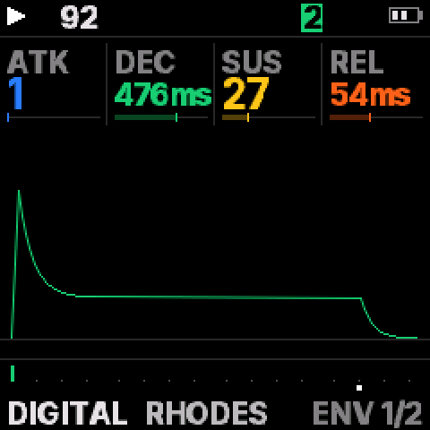

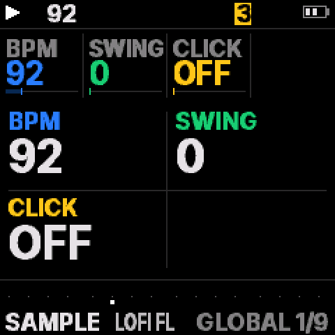
Messages
- Small changes, such as a new value, a sound's name or a hint, appear in the title line for 1.5 seconds, underlined in yellow.
- Things that matter appear in a window at the top: green for a save or a question to confirm, red for an error.
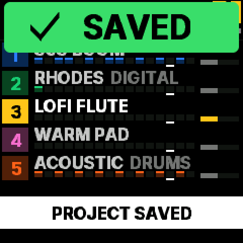

Tap for pages, hold for layers
Most buttons have two jobs. Tap a button to open its pages. Hold it to change what the keys and knobs do. Learn this and the rest of the FM-1 follows.
Tap to open pages
Tap a button to open its first page, and tap it again for the next one. The corner shows where you are, for example 2/7. You can also turn SELECT to move between pages.
Each button reopens the page you used last.
Hold to open a layer
Hold a button and the keys and knobs do something else until you release it. The screen shows each key's new job as a tile.
To keep a layer open with both hands free, hold its button and tap HOME. Press any other button to close it.
| Button | Tap to open | Hold for |
|---|---|---|
| EDIT | The sound's pages, then SOUNDS | ERASE: Erase notes, one key at a time |
| FX | Effect pages | PUNCH: Add an effect while you hold a key |
| SEL | Key, scale and chord pages | KEY: Press a key to set the song's key |
| ARP | Arpeggiator pages | ROLL: Repeat a held note in time |
| SEQ | NOTES, PATTERN and SONG | STEPS: Place notes on the 16 steps |
| GLO | Global settings | MIX: Mute, solo and balance the tracks |
| SAVE | The SONG screen | Patterns: Switch, chain or save patterns |
| HOME | TRACKS (on TRACKS, the visualizer) | The menu |
| ENV, LFO | Envelope and LFO pages | No layer |
To change the tempo while you hold a layer, turn SELECT. It also sets the tempo on any button that has only one page.
The menu
The menu holds settings for the whole FM-1: the screen, the lights, audio and the system.
Hold HOME for about a second, until the screen shows MENU. Release HOME. The menu stays open and HOME blinks.
Turn SELECT to choose a section.
Turn the knob under a setting to change it. SLOOP keeps your settings when you switch off.
Press HOME to close the menu.

| Section | Settings |
|---|---|
| SCREEN | COLOR: Choose a color theme. KNOB ACCEL: Make values change faster when you turn a knob quickly. |
| LIGHTS | LIGHTS: Set how brightly the buttons glow. KEYS: Choose which keys glow. NOTES: Light up keys as their notes play. |
| AUDIO | SPEAKER LOWCUT: Fill out the bass on the built-in speaker. USB AUDIO, USB RATE: Choose what the FM-1 sends to a computer. FILTER RESO: Set how sharp the track filters sound. |
| SEQ | DRUM PREVIEW: Hear a drum sound as you select it. |
| SYSTEM | 2ND CORE: Use the second processor for more voices. Calibrate the buttons and knobs, clear MIDI LEARN, and see the firmware version. |
While you hold HOME, three white keys manage the project: key 1 OPEN, key 3 NEW, key 5 SAVE. See Save and load.
Turn on SPEAKER LOWCUT in the AUDIO section. The small speaker can't play deep bass, so SLOOP rebuilds the bass as tones the speaker can play, and the drums sound fuller. Turn it off for headphones or external speakers.
Tracks, patterns, chains and songs
Five words you'll see everywhere. Each one holds the next.
- Track
- One instrument part. Tracks 1–4 play synth sounds and track 5 plays drums. Turn ALGORITHM to choose the track the keys play and the pages edit.
- Step
- One slot in time. A pattern has 16 steps by default. Each step is a sixteenth note, so 16 steps make one bar.
- Pattern
- A loop of steps on one track, with its own sound. Each track has 8 patterns, so a verse, a chorus and a break can sit side by side.
- Chain
- Two or more patterns that play in turn and then repeat. You build one in a second, live.
- Song
- A list of lines. Each line says which pattern every track plays, and for how many bars.
Pattern, chain or song?
Start with patterns and move up only when you need to. Many people never make a song: they switch patterns live.
| To | Use | See |
|---|---|---|
| Loop an idea and build it up | A pattern | Record a loop |
| Try a different version of a part | A copy of a pattern | Make a variation |
| Move between parts while you play | Pattern switching | Switch patterns live |
| Repeat a short sequence of parts | A chain | Chain patterns |
| Play a finished arrangement | A song | Build a song |
Each pattern has its own sound
A pattern stores its notes and the track's sound. When you switch to another pattern, the track plays that pattern's sound. This lets the bass in the chorus sound brighter than the bass in the verse. To give all 8 patterns of a track the same sound, see Make a variation.
What SLOOP keeps, and when
SLOOP keeps two copies of your work. Knowing the difference saves you from losing an idea.
- What's playing: edit it freely. SLOOP saves it a couple of seconds after your last change, and plays it again when you switch on.
- The 8 saved patterns: SLOOP changes one only when you save into it. When you switch to another pattern, SLOOP reloads the one you left as you last saved it.
Unsaved changes to a pattern are lost when you switch away from it. To keep them, hold SAVE and hold the pattern's key for 1.5 seconds first. See Save your work.
First steps
Start your first project
A new FM-1 running SLOOP 3 starts with a demo project. Listen to it first, then start your own.
Switch on and turn MASTER up slowly. The SLOOP logo draws itself, then the TRACKS screen opens.
Press PLAY. The demo plays. Turn ALGORITHM to select each track in turn, and play the keys to hear its sound. Press PLAY again to stop.
Hold HOME and press key 3 (NEW). SLOOP asks you to press again.
Press key 3 again while you still hold HOME. SLOOP starts an empty project with a sound on each track.

Turn SELECT to set the tempo. Next, choose sounds and record a loop.
Once SLOOP saves your new project, the demo is gone. To keep the demo, save it as a file first with the web editor.
First steps
Choose sounds and favorites
SLOOP sorts its sounds into categories: FAVS, BASS, KEYS, ORGAN, PAD, LEAD, PLUCK, STAB, FX, YOURS (sounds you saved) and DX7 (when you've loaded DX7 voices). On the drum track, the categories hold kits.
Select a track with ALGORITHM, then turn PRESETS. The sound changes, and the SOUNDS page shows where you are. The page closes 4 seconds after your last turn.

To browse instead, tap EDIT until the screen shows SOUNDS. Each tile matches a white key. Press a white key to load its sound and hear it. Black keys play the current sound without changing it.
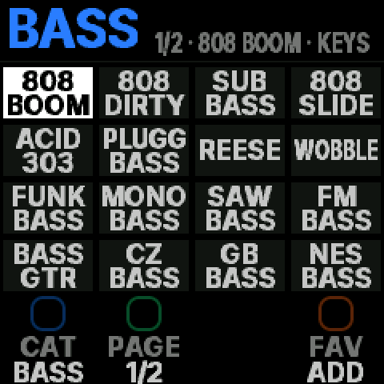
Turn KNOB 1 to change category, and KNOB 2 or SELECT to change page.
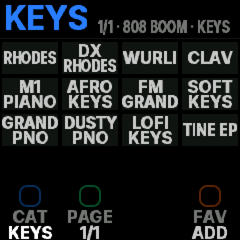
Turn KNOB 4 right to add the sound to your favorites. A yellow dot marks it, and it appears in FAVS, the first category. Turn KNOB 4 left to remove it. In FAVS, turn KNOB 3 to reorder.
The Sound tab lists every sound with a search box. The Library tab renames, reorders and files your 32 saved sounds.
First steps
Record a loop
Recording works like a looper. The pattern keeps going round, and SLOOP adds what you play on every pass.
Select a track with ALGORITHM and press PLAY.
Press REC. The track turns red and recording starts at once.
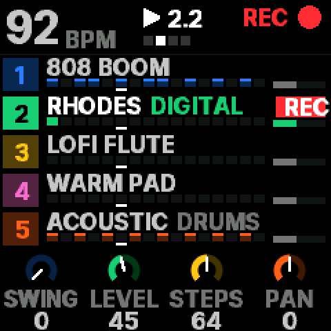
Play. SLOOP places each note on the nearest step. Keep playing on the next passes to add more. A note you play again in the same place replaces the old one, so a repeated chord doesn't stack up.
Press REC again to stop recording. The loop keeps playing.
Start from silence
Press REC while stopped. SLOOP shows REC READY and waits. Your first note starts the loop and becomes step 1.

| Knob | What it sets |
|---|---|
| MODE | On an empty project only. FREE follows your playing to find the tempo. TEMPO records at the tempo set. |
| LENGTH | How long the loop is, in bars |
| START | NOTE starts on your first note. COUNT plays one bar of clicks after you press PLAY. |
| QUANT | ON snaps notes to steps. OFF keeps your exact timing. |
The free take
On an empty project, press REC and play with no click. When you've played your bars, press REC on the first beat after the last one. SLOOP works out the tempo from your playing and makes a loop of 1, 2 or 4 bars.
Fix mistakes
| To | Do this |
|---|---|
| Undo, up to 3 times | Hold EDIT and press OCT− |
| Redo | Hold EDIT and press OCT+ |
| Erase one note or drum sound | Hold EDIT and press its key. While playing, hold the key: SLOOP erases the note each time the loop passes it. |
| Erase the whole track | Hold REC for 2 seconds. Undo brings it back. |
| Throw away all unsaved changes to a pattern | Hold SAVE and tap the key of the pattern that's playing. SLOOP reloads it AS SAVED. |
To hear a click while you record, tap GLO and turn CLICK to REC (only while recording) or ON (always).
First steps
Write and edit notes
You can place notes by hand in two ways: the NOTES piano roll for melodies, and the STEPS layer for quick on-and-off patterns.
Use the NOTES piano roll
Tap SEQ. NOTES shows the pattern as bars on a piano roll. A white outline marks the note you're editing.
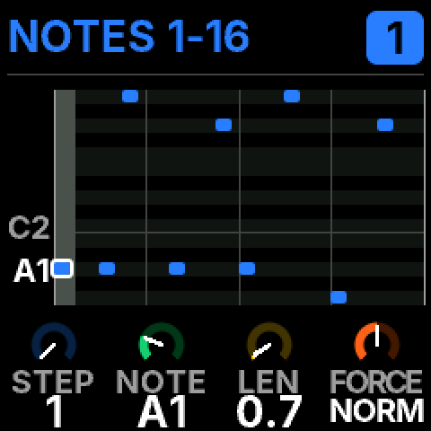
Turn STEP to choose a step, then press keys to write notes there. Press several keys together for a chord. When you release the keys, SLOOP moves to the next step.
Turn NOTE to change the pitch, LEN to change the length in steps, and FORCE to set how hard it plays: GHOST, SOFT, NORM, HARD or ACC (accent). Turn PRESETS to zoom from 8 to 64 steps. Tap EDIT to delete the note.
Hold OCT+ to open the note's sheet: SLIDE, NUDGE, FILL, MOVE, COPY and DELETE. Turn KNOB 1 to choose a line and KNOB 2 to set it. Press OCT+ to apply it, and OCT− to close the sheet.

Use the STEPS layer
Play a note to tell SLOOP which note to place. Then hold SEQ. The 16 white keys are now the 16 steps of the page, and lit tiles have notes.

Press a key to add the note on that step. Press it again to clear it. OCT− and OCT+ move between pages of 16 steps. To edit one step in detail, see Step details.
Set the pattern's length and feel

Tap SEQ until the screen shows PATTERN. The four knobs set how the selected track's pattern plays.
| Knob | What it sets |
|---|---|
| LEN | How many steps play before the pattern loops [1–128, default 16] |
| DIV | How long each step lasts, from 1/32 to 2 bars [default 1/16]. Choose 1/8 to play the pattern at half speed. |
| SWG | Swing: how late every second step plays, for a looser groove [0–100, default 0]. SLOOP adds it to the global SWING on the GLOBAL page. |
| GATE | How long notes sound, from 10% to 200% of their written length [default 100] |
The Sequencer tab is a full piano roll. Draw, drag and stretch notes with the mouse, set velocity and conditions, and import or export MIDI files.
First steps
Program drums
The drum track plays a kit of 16 sounds, one per white key: kick, snare, hi-hats and so on. Record drums live like any other track, or place hits on the grid.
Select track 5 with ALGORITHM, then turn PRESETS to choose a kit.

Tap EDIT to open the DRUMS grid. Each row is a sound and each column is a step.
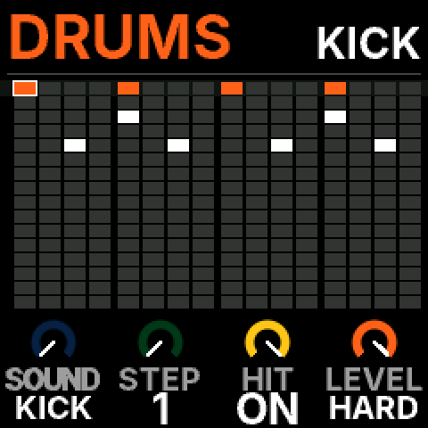
Choose a sound with a black key or SOUND. Then press white keys to add or clear its hits on the 16 steps. OCT− and OCT+ move between pages of 16 steps.

Shape a hit. Turn STEP to select it and LEVEL to set how hard it plays. Hold OCT+ for its sheet: RATCHET (repeat the hit inside its step), NUDGE, FILL, MOVE, COPY and DELETE.

Tap EDIT again for KIT, where you set the kit, its level, reverb and pan. Tap once more for SOUND, where each of the 16 sounds gets its own TUNE, DEC (decay) and LEVEL.

Play drums live
- Hold OCT− while you play for soft ghost notes, or OCT+ for hard hits.
- Hold ARP and hold a key to roll it in time, for example a hi-hat roll. RATE sets the speed. SLOOP records rolls as ratchets.
- Hold EDIT and hold a key while the loop plays to erase that sound as it passes.
The Drum kit tab tunes each pad. Drum synth builds your own synthesized kits, SYN1–4.
First steps
Save your work
Read What SLOOP keeps, and when first. In short: SLOOP saves what's playing on its own, but each of the 8 patterns changes only when you save into it.
Save a pattern
Hold SAVE. Tiles 1–8 are the selected track's patterns. The one playing is lit in the track's color.
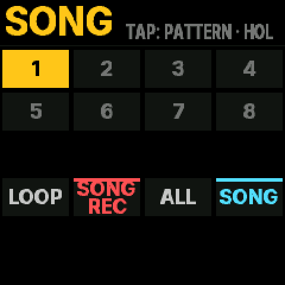
Keep holding SAVE, and hold the pattern's key for 1.5 seconds. Its tile fills up.
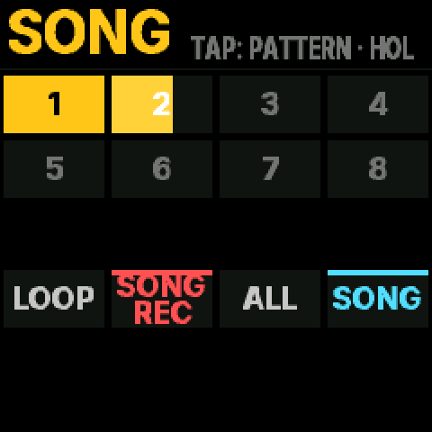
Release the key. A green SAVED confirms the save, and SLOOP saves the project with it. If you save over another pattern that already has notes, SLOOP asks you to press its key once more.
Save, open or start a project
| To | Do this |
|---|---|
| Save the project | Hold HOME and press key 5. Or, on TRACKS, tap SAVE twice for PROJECT and turn SAVE right. |
| Go back to the saved project | Hold HOME and press key 1 (OPEN). If you've changed anything, SLOOP asks you to press again. |
| Start an empty project | Hold HOME and press key 3 twice, or turn PROJECT's NEW right. |
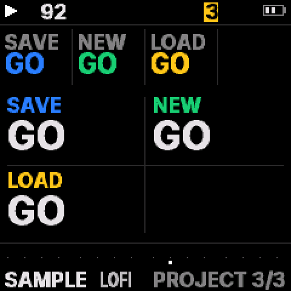
Save a sound
A sound you've shaped stays with its pattern. To use it in other projects, save it in one of your 32 sound slots.
Tap EDIT, then tap SAVE. The SAVE pages open: PRESETS, USER, PATTERNS and TOOLS.
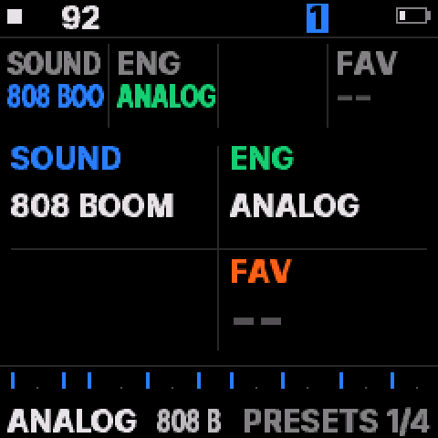
Turn SELECT to USER. Turn SLOT to choose a slot, then turn SAVE right. The sound appears in the YOURS category.
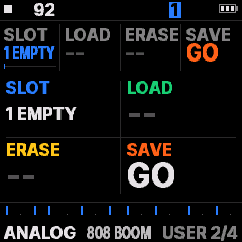
The FM-1 holds one project, with room for all 5 tracks × 8 patterns × 128 steps. Keep as many others as you like as files on your computer with the web editor.
Going further
Shape a sound
An engine makes each sound: an analog-style synth, FM, a sampler and others. An envelope and an LFO then shape it. You don't need to know synthesis to start: turn a knob and listen.
Change the engine's values
Tap EDIT for the engine's own pages. Their names and values change with the engine: an ANALOG sound shows OSC and FLT, a DIGITAL sound shows OPS and MOD. Sound engines lists every engine's values.
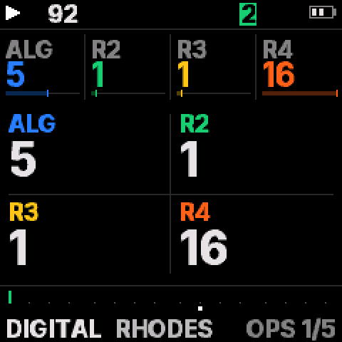

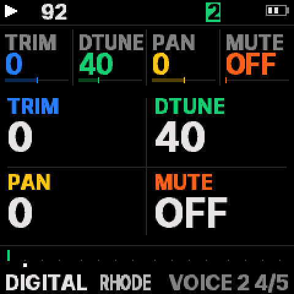
Shape how a note starts and ends
Tap ENV. The envelope sets how each note's volume rises and falls.
| Knob | What it sets |
|---|---|
| ATK | Attack: how quickly the note fades in |
| DEC | Decay: how quickly it falls to the sustain level |
| SUS | Sustain: the level while you hold the key |
| REL | Release: how long it rings after you release the key |
Try a short ATK and DEC with SUS at 0 for a pluck, or a long ATK and REL for a pad.
Add movement with the LFO
An LFO is a slow wave that moves a value up and down: vibrato on pitch, a wah on the filter, a tremolo on the volume. Tap LFO and set its RATE and WAVE. Then tap LFO twice more for LFO DEST, and turn up the value you want it to move. Envelope and LFO routing covers every value.
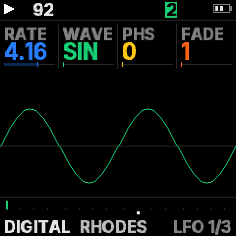

To keep a sound for other projects, see Save a sound.
The Sound tab shows every value of a sound as knobs, with A/B compare, copy and paste, and RANDOM.
Going further
Add effects
SLOOP has effects you set and leave, and effects you play live.
Set effects on the FX pages
Tap FX. The first page sets how much of the selected track goes to each shared effect: DST distortion, CHO chorus, DLY delay and REV reverb. Tap FX again for the track's own filter, slicer and insert effect, then for the delay and reverb themselves.

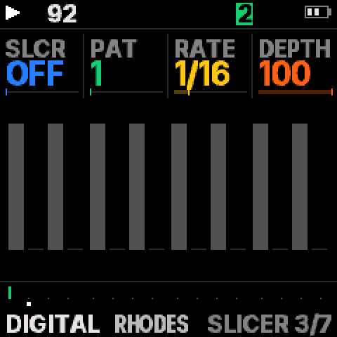
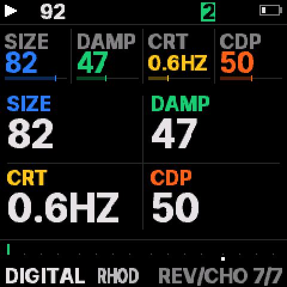
| Page | Knobs | Use it to |
|---|---|---|
| FX 1/7 | DST, CHO, DLY, REV | Send the track to the distortion and the shared effects |
| FILTER 2/7 | FILT | Sweep one filter on this track: left for low-pass, right for high-pass |
| SLICER 3/7 | SLCR, PAT, RATE, DEPTH | Chop the track in rhythm. GATE cuts the sound on and off; STUT repeats it. PAT chooses one of 16 rhythms. |
| INSERT 4/7 | TYPE, then three values | Add a drive (SOFT, HARD, FOLD, FUZZ), a bit crusher (CRUSH), or a phaser, flanger or chorus |
| INSERT 2 5/7 | MIX | Blend the insert effect with the dry sound |
| DLY 6/7 | TIME, FDBK, COLR, MIX | Set the shared delay's time in note values, its repeats and its tone |
| REV/CHO 7/7 | SIZE, DAMP, CRT, CDP | Set the reverb's room size and damping, and the chorus's rate and depth |
Play effects live with PUNCH
Hold FX. The screen shows 27 effects, one per key: stutters, reverse, tape stop, filters, bit crush, echo and more.
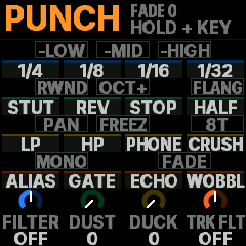
Hold a key to apply its effect to the whole mix. Release it to stop. SLOOP doesn't record punch-in effects, so experiment freely.

While you hold FX, the knobs control a DJ filter (FILTER), vinyl dust (DUST), sidechain pumping (DUCK) and a filter on the selected track only (TRK FLT). Press OCT− to throw everything into the reverb, or OCT+ into the delay.
The full list of punch-in effects is in Perform live.
Going further
Mix tracks

Hold GLO for the MIX layer. Each column is a track.
- Press keys 1–5 to mute tracks 1–5.
- Press keys 6–10 to solo them.
- Hold key 11 (FILL) to play fill steps. Press key 12 (BAR) to play a fill for one bar.
- Tap key 14 (TAP 16) in time to set the tempo.
- Turn ALGORITHM to select a track, then use the knobs to set its LVL, PAN, DLY and REV.
On TRACKS, LEVEL and PAN set the selected track directly. MASTER sets the overall volume.
The Mixer tab has every track's level, pan, drive and sends, plus the shared delay, reverb and chorus. The LIVE tab adds faders, meters and 8 mix scenes you can morph between.
Going further
Play chords, scales and arpeggios
Set the key
Hold SEL for the KEY layer, then press a key to set the song's key, for example D.

While you hold SEL, turn SCALE to choose a scale, such as major or minor. Then turn KEYS: SNAP moves every key to the nearest note in the scale, and WHITE puts the scale on the white keys, so you can't play a wrong note.
Play a chord with one finger
Hold SEL and turn CHORD to TRIAD, 7TH or another type. Each white key now plays a full chord in the key, and the black keys change the chord's color. Tap SEL twice for SEL 2: STRUM spreads a chord's notes like a guitar, and VLEAD keeps each chord close to the one before, so changes sound smooth.
Use the arpeggiator
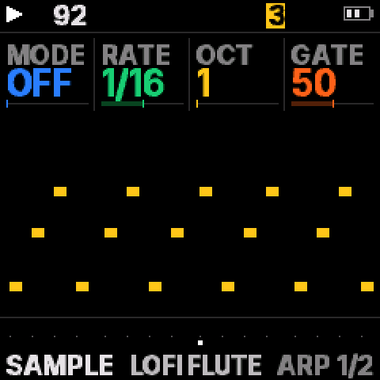
An arpeggiator plays the notes of a held chord one at a time, in time. Tap ARP and turn MODE away from OFF. Hold a chord to hear it.
RATE sets the speed, OCT the range in octaves, and GATE the note length. Tap ARP again for ARP 2: SWG swing, PROB the chance each note plays, HOLD to keep playing after you release the keys, and ORD to play notes in pitch order (NOTE) or the order you pressed them (PLAY).
Going further
Switch patterns live
Switch between saved patterns while the music plays, for example from a verse to a chorus. SLOOP waits for the next bar, so the change always lands on the beat.
Press PLAY.
Hold SAVE. Tiles 1–8 show the selected track's patterns. Lit tiles have notes, and the one playing is in the track's color.
Tap a pattern's key. The tile blinks yellow until the next bar, then the new pattern plays. When stopped, SLOOP switches at once.
Release SAVE.
Switch one track or every track
While you hold SAVE, press key 15 to choose ALL or TRACK. ALL switches every track to the same pattern number. TRACK switches only the selected track, so you can keep the drums going and change the bass.
Tips for a smooth set
- Hold GLO and press key 12 (BAR) just before a change, to play a drum fill into it. See Step details for writing fills.
- Mute and unmute tracks from the MIX layer to build up and break down a pattern without switching.
- Tap the key of the pattern that's playing to reload its saved version. Use it to undo a live experiment.
On the LIVE tab, click a pattern to queue it, or press Shift + 1–8 to switch every track.
Going further
Make a variation
A variation starts as a copy. Copy the pattern into a free slot, then change the copy and keep the original.
Hold SAVE. Find an unlit tile: that pattern is empty.
Hold the empty pattern's key for 1.5 seconds, for example key 2. SLOOP copies the playing pattern into pattern 2, with its notes and sound, and saves the project.
Tap key 2 while you still hold SAVE. Pattern 2 plays from the next bar.
Change the copy. Add notes, erase the hi-hats, or try another sound.
Save it: hold SAVE and hold key 2 for 1.5 seconds.
SLOOP copies the pattern as it plays now, then reloads the original as you last saved it when you switch away. To keep your changes in both, save the original first.
Change a whole pattern at once
Hold EDIT for the ERASE layer. Its knobs change the whole pattern of the selected track:
| Knob | Turn right | Turn left |
|---|---|---|
| SHIFT | Move every note one step later | Move every note one step earlier |
| LENGTH | Double the length, with a copy of the pattern in the new half | Halve the length. SLOOP keeps the second half, so doubling again brings it back. |
| TRANSP | Move every note up a semitone | Move every note down a semitone |
Doubling is the quickest way to a 2-bar pattern: double a 1-bar pattern, then change the second bar.
Give tracks different lengths
Each track's pattern has its own LEN on the PATTERN page. Set the hi-hats to 12 steps and the kick to 16, and the two drift apart and meet again every 3 bars. This is called polymeter, and it keeps a short loop from sounding repetitive.
Use one sound across all patterns
Each pattern keeps its own sound. To copy the selected track's sound to all 8 of its patterns, tap SAVE on TRACKS, turn SELECT left to SONG 1/3, and turn KNOB 1 right. A dot on a pattern's tile means its sound is different from the one playing.
Going further
Chain patterns
A chain plays two or more patterns in turn, then starts again. Use it to hear a verse and a chorus back to back without switching by hand.
Hold SAVE.
Tap two or more pattern keys in order, for example 1, 1, 2, 3. The screen shows the chain, and its tiles are marked.
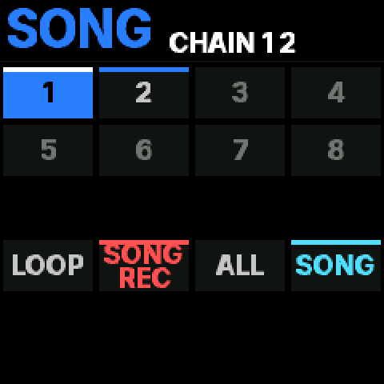
Release SAVE. SLOOP plays each pattern once through, then moves to the next.
To stop the chain, hold SAVE and tap a single pattern. Key 15 (ALL or TRACK) decides whether the chain switches every track or only the selected one.
Going further
Build a song
This recipe turns a loop into a song with an intro, a verse, a chorus and an outro. You record the arrangement by playing it, then fix it line by line.
1. Make the parts
Build your main loop in pattern 1 and save it. This is the verse.
Copy it into pattern 2 and make it bigger for the chorus: a brighter sound, an extra part, more drums. Save it. See Make a variation.
Copy pattern 1 into pattern 3 and strip it back for the intro and outro: just the pad and the kick, for example. Save it.
2. Record the arrangement
Switch to pattern 3 and press PLAY.
Hold SAVE and press key 14 (SONG REC). From the next bar, SLOOP writes down every pattern you play, and for how long.
Play the arrangement by switching patterns: 3 for the intro, then 1, 2, 1, 2, and 3 for the outro.
Hold SAVE and press key 14 again. SLOOP shows SONG KEPT.
3. Play the song
Hold SAVE and press key 13 to switch from LOOP to SONG, then press PLAY. Press key 13 again to go back to looping one pattern.
4. Fix it line by line
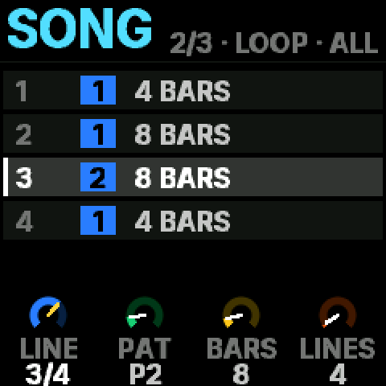
On TRACKS, tap SAVE for the song's lines. Each line shows a pattern number and its length in bars.
| Knob | What it sets |
|---|---|
| LINE | The line to edit |
| PAT | The pattern the line plays, on every track or the selected one (key 15) |
| BARS | How many bars the line lasts |
| LINES | How many lines the song has. Turn right to add a line at the end, left to remove the last one. |
The pattern keys work on this page without holding SAVE. Press key 13 to play the song from the line shown, so you can check an edit.
The Song tab shows the whole song as a table. Edit each track's pattern and mutes line by line, then send it to the FM-1.
Going further
Back up and restore
Open the editor at isod89.github.io/sloop3-fm1/editor.html in Chrome or Edge, connect the FM-1 by USB and press Connect.
Open the Projects tab.
Press BACK UP EVERYTHING. Your project and your 32 sounds download as one
.s3bfile. To put a backup back on the FM-1, press RESTORE.

To keep several projects, save each as a file (.s3p) from the same tab and open any of them later.
Advanced
Sound engines
Each synth sound runs on one of 13 engines. The first two EDIT pages show the engine's eight values, four per page, and take their names from the engine. To change engine, choose a sound that uses it: the PRESETS page (tap SAVE from a sound page) shows the engine's name as ENG.
| Engine | What it is | EDIT 1 | EDIT 2 | Try this |
|---|---|---|---|---|
| ANALOG | A classic subtractive synth: oscillators through a filter | WAVE, DTN (detune), MIX, NOIS | CUT (cutoff), RES (resonance), DRV (drive), KTR (key tracking) | Lower CUT and raise RES for an acid bass. ANALOG also has a FILTER page with TYPE: LP, BP or HP. |
| DIGITAL | 4-operator FM: bright, glassy, bell-like | ALG (algorithm), R2–R4 (frequency ratios) | IDX (FM amount), MDEC (how fast FM fades), FB (feedback) | Raise IDX and shorten MDEC for an electric piano attack. |
| FM6 | 6-operator FM that plays DX7 voices | ALG, FB, MLVL, MRAT | MEG, VMOD, DTUN, PTCH (the voice) | Set PTCH to a voice from your DX7 bank. |
| PHASE | Phase distortion, in the style of 1980s Casio synths | WAVE, WAVE2, DCW (brightness), ENV | DTN, LINE (MIX or RING), SUB | Sweep DCW for a filter-like sweep with no filter. |
| LOFI | Chiptune: early game-console sounds | CHIP, WAVE, DUTY, CRSH (crush) | SWP (pitch sweep), VIB (vibrato), ARP (OCT, MAJ, MIN), TONE | Set ARP to MAJ for an instant chip arpeggio. |
| WHEEL | A drawbar organ with a rotary speaker | REG (registration), SUB, BODY, TOP | PERC (percussion), CLICK, DRV, ROTR (rotary: OFF, SLOW, FAST) | Choose ROCK, then set ROTR to FAST. |
| TRIO | Three oscillators into a filter | WAVE, INT2, INT3 (intervals), DTN | MODE (LP, BP, HP, NOT), CUT, RES, PW (pulse width) | Set INT2 to 7 and INT3 to 12 for a power-chord lead. |
| NOISE | Filtered noise for textures, wind and risers | MODE, COLR (color), FREQ, RES | TRK, DENS (density), DRFT (drift), CRSH | Use DUST mode with low DENS for crackle. |
| VOICE | A formant synth that sings vowels | VOWL, VOWL2, TALK, SHIFT | BUZZ, BRTH (breath), Q, RAND | Set VOWL and VOWL2 apart and raise TALK for a talking bass. |
| PHYS | Physical modeling: struck, plucked and bowed objects | MODEL (MODAL, STRNG, MEMB, SYMP), STRC, BRIT, DAMP | POS, ACC, BOW, EXC | Choose STRNG and lower DAMP for a ringing pluck. |
| SAMPLE | Plays recorded instruments across the keys | SET (PIANO, BASS, VIBES… or USR1–4), TUNE, BITS, LOOP | CUT, DRV | Lower BITS for a lo-fi piano. |
| GRAIN | Granular: clouds of tiny pieces of a sample | SRC, POS (position), SIZE, DENS | PTCH, SPRD (spread), RAND, TONE | Slowly move POS on a held chord for an evolving pad. |
| SLICE | Plays a drum break in slices, one per key | SRC, DIV, STRT, PTCH | MODE, REV, DCAY, TONE | See Use your own samples. |
The drum track uses its own engine. Its values are on the KIT and SOUND pages: see Program drums.
VOICE and VOICE 2
Every engine shares these two pages. Tap EDIT until you reach them.
| Page | Knob | What it sets |
|---|---|---|
| VOICE | VCE | How notes play together: POLY (chords), MONO (one note), LEG (legato: one note, no restart when notes overlap), UNI (unison: stacked, detuned voices) |
| GLIDE | How long the pitch takes to slide from one note to the next | |
| GLMOD | RATE: the glide moves at a fixed speed. TIME: it always takes the same time. | |
| PRIO | In MONO and LEG, which note wins when you hold several: LAST, LOW or HIGH | |
| VOICE 2 | TRIM | The sound's own level, to match it with other sounds |
| DTUNE | How far apart the unison voices are tuned | |
| PAN | The track's position from left to right | |
| MUTE | Mutes the track |
Advanced
Envelope and LFO routing
The envelope and the LFO don't only shape volume. Route them to the filter, the pitch or the engine's shape to make a sound move.
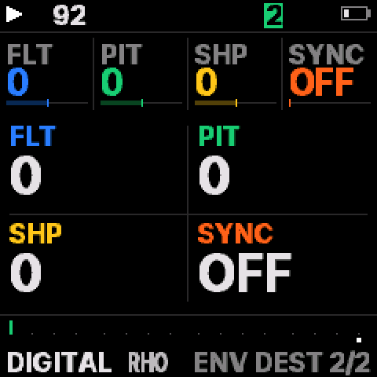
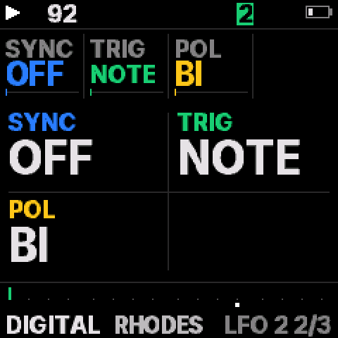
| Page | Knob | What it sets |
|---|---|---|
| ENV DEST (ENV twice) | FLT | How much the envelope opens (right) or closes (left) the filter |
| PIT | How much it bends the pitch, for a kick-like drop or a rising zap | |
| SHP | How much it moves the engine's shape, such as the pulse width on ANALOG | |
| SYNC | ON sets ATK, DEC and REL in note values that follow the tempo | |
| LFO (LFO once) | RATE | How fast the LFO moves |
| WAVE | Its shape: SIN, TRI, SAW, SQR, or S&H (random steps) | |
| PHS | Where in its cycle the LFO starts | |
| FADE | How long the LFO takes to fade in after a note starts, for delayed vibrato | |
| LFO 2 (LFO twice) | SYNC | Locks the rate to the tempo, from 4 bars to 1/32. OFF uses RATE. |
| TRIG | NOTE restarts the LFO on every note. FREE lets it run. | |
| POL | BI moves the value up and down. UNI moves it one way only. | |
| LFO DEST (LFO three times) | PIT | How much it moves the pitch: vibrato |
| FLT | How much it moves the filter: wah | |
| SHP | How much it moves the engine's shape | |
| AMP | How much it moves the volume: tremolo |
Recipes
- Wobble bass: LFO 2 SYNC to 1/8, LFO DEST FLT up, and a low filter cutoff.
- Pluck: ENV SUS at 0, short DEC, and ENV DEST FLT up.
- Laser: ENV DEST PIT far right with a short decay.
- Delayed vibrato: LFO FADE up and LFO DEST PIT slightly up.
Advanced
Step details: locks, conditions and ratchets
Each step can have its own velocity, repeats, timing, play condition and sound settings. Edit them from the STEPS layer.
Hold SEQ, then hold a step's key. The screen shows STEP and the step number. The knobs now edit that step only.
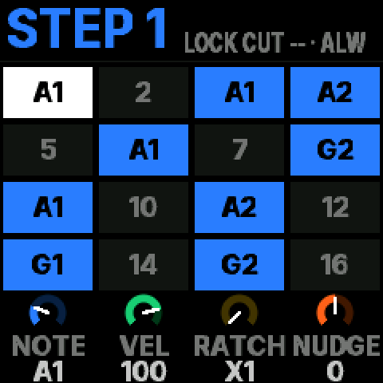
Turn a knob to change the step. Hold more step keys to change them all at once.
| Control | What it sets on the held step |
|---|---|
| NOTE | The pitch. On drums, SOUND chooses which of the step's drum sounds you're editing. |
| VEL | How hard the note plays. Drums show GHOST, SOFT, NORM or HARD. |
| RATCH | Ratchet: plays the note 1 to 4 times inside the step, for rolls and trills |
| NUDGE | Moves the note up to half a step early or late, for a human feel |
| OCT+ | Steps through the play conditions (below) |
| OCT− | Resets the step's settings and timing |
| ALGORITHM, then PRESETS | A lock (below) |
Play a step only sometimes: conditions
A condition decides when a step plays. The top line shows it, after the step's lock. Press OCT+ to move to the next one.
| Condition | The step plays |
|---|---|
| ALWAYS | Every time (the default) |
| FILL | Only while a fill plays. Hold GLO and use key 11 or key 12 to play a fill. |
| NO FILL | Every time except during a fill |
| 1 OF 2 … 4 OF 4 | On one pass out of 2, 3 or 4. For example, 2 OF 4 plays on the second of every four passes. |
| 10 % … 90 % | At random, with that chance |
Example: put a snare on step 16 with 4 OF 4, and the beat gets a pickup into every fourth bar.
Change a sound on one step: locks
A lock gives one step its own value for a sound setting: a brighter filter on the last note, more reverb on one snare. While you hold the step, turn ALGORITHM to choose the setting, then turn PRESETS to set its value on that step. The top line shows the locked setting and its value, for example LOCK CUT 60.
You can lock the engine's values, the envelope, the LFO amounts, glide, detune, the insert and slicer, and the mix: LEVEL, PAN, CHO, DLY, REV and FILT. On the drum track, lock the four drum values and the mix.
Slides and accents
On a synth track, open NOTES and hold OCT+ for the note's sheet. Set SLIDE to glide into the next note, like a 303 bass line. To accent a note, set FORCE to ACC.
The Sequencer tab edits conditions, ratchets, accents, slides and locks with the mouse, with a lane for each lock.
Advanced
Perform live
Everything on this page plays in real time and leaves your patterns untouched.
Keep a layer open
Layers close when you release their button. To keep one open with both hands free, hold its button and tap HOME. SLOOP shows LOCK: LAYER OPEN. Press any other button to close it. PLAY, REC and the OCT buttons don't close it.
Punch-in effects
Hold FX, then hold a key. The effect applies to the whole mix until you release the key.
| Keys | Effects |
|---|---|
| White 1–4 | 1/4, 1/8, 1/16, 1/32: loop the mix at that length |
| White 5–8 | STUT (stutter), REV (reverse), STOP (tape stop), HALF (half speed) |
| White 9–12 | LP and HP (filter sweeps), PHONE (telephone), CRUSH (bit crusher) |
| White 13–16 | ALIAS (lower sample rate), GATE (rhythmic gate), ECHO, WOBBL (wobble) |
| Black keys | -LOW, -MID, -HIGH (cut a band), RWND (rewind), OCT+ (octave up), FLANG (flanger), PAN, FREEZ (freeze), 8T (triplet repeat), MONO, FADE |
While you hold FX, the knobs play a DJ filter, vinyl dust, sidechain ducking and a filter on the selected track. Press OCT− to throw the whole mix into the reverb, or OCT+ into the delay.
Rolls
Hold ARP and hold a key: SLOOP repeats the note in time. RATE sets the speed: 1/8, 1/16, 1/32, 32T or 1/64. Rolls you play while recording become ratchets.
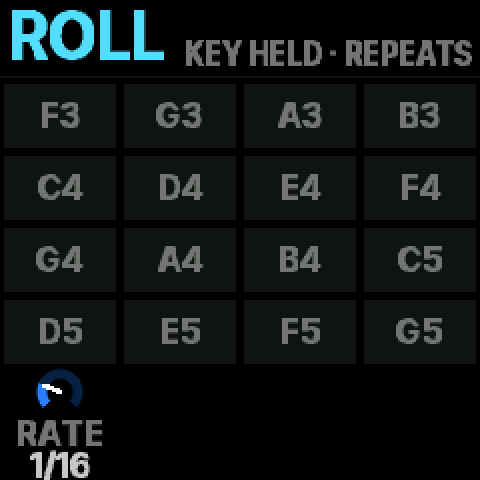
Mutes, fills and tempo
- Hold GLO to mute and solo tracks, play fills and tap the tempo. See Mix tracks.
- On the drum track, hold EDIT and press a black key to switch from ERASE to MUTE. The white keys then mute single drum sounds, such as the hi-hats. SLOOP doesn't save these mutes.
The MASTER page
Tap GLO twice for MASTER: DUST adds vinyl crackle, DUCK makes the mix pump with the kick, FILT sweeps a DJ filter over everything, and ROLL sets the roll rate.
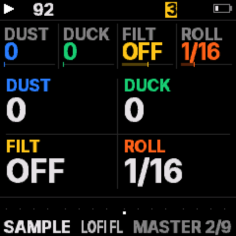
Add a texture
A texture is a quiet bed of sound under the mix, such as vinyl noise or rain. Tap GLO until the screen shows TEXTURE.
| Page | Knobs |
|---|---|
| TEXTURE | SRC the sound: VINYL, TAPE, RAIN, WIND, RADIO, ROOM, or your samples USR1–4. LEVEL. TONE a low-pass or high-pass filter. MOVE how much it changes over time. |
| TEXTURE 2 | RATE how often it changes, from 1 to 16 bars. WHEN PLAY (only while playing) or ALWAYS. DUCK lowers it with the kick. |
The visualizer
On TRACKS, tap HOME for a full-screen visualizer. Turn SELECT to change its style: OSCILLOSCOPE, SLOOP, WIRES, VU METERS, SPECTRUM or LCD. The keys and layers still work. Tap HOME to close it.
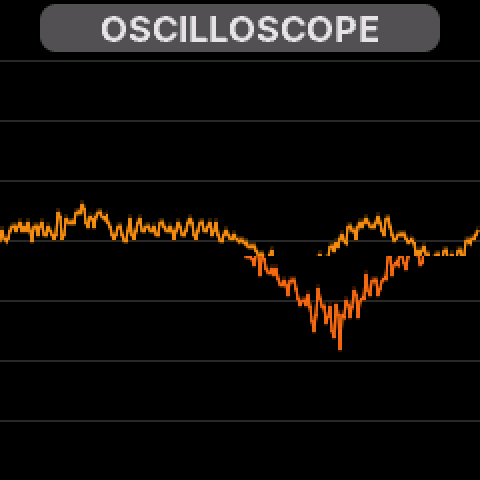
Advanced
Use your own samples
Load any audio file into one of four slots, USR1–4. Then play it as an instrument, as a 16-pad drum kit, or as a break cut into slices.
Connect the FM-1 and open the editor's Samples tab.
Choose how the sample plays: as an instrument across the keys, as a 16-pad kit, or as a BREAK cut into slices. Then choose the file, or record one from your computer's input.
Trim it with START and END. To cut a break, choose AUTO for a slice on each hit, GRID for equal slices, or double-click to add your own cuts.
Press Send to the FM-1. You can send a break straight to a synth track, which plays it with the SLICE engine, or to the drum track as one of YOUR KITS. SLOOP also writes a pattern that plays the break back as recorded.
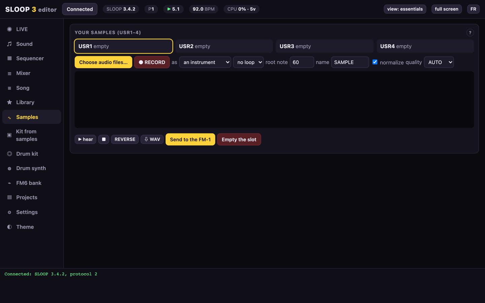
Each slot holds about 7 seconds at 22 kHz, 10 seconds at 16 kHz, or 14 seconds at 11 kHz. Choose the quality in the editor.
Play slices on the FM-1
On a synth track, choose BREAK 16, CHOP 8, REVERSE or USR SLICE from the FX category. Each key plays one slice, starting from the lowest key. At 120 BPM, playing the 16 slices of BREAK 16 in order gives you the original bar. Then rearrange the slices in the sequencer.
| Value | What it sets |
|---|---|
| SRC | The source: the built-in break, or your slot USR1–4 |
| DIV | How to cut it: 4, 8, 16 or 32 equal slices, AUTO for one per hit, or EDIT for the cuts you made in the editor |
| STRT | Which slice the lowest key plays |
| PTCH | Playback speed: faster plays higher |
| MODE | ONE plays the whole slice, GATE plays while you hold the key, LOOP loops it while you hold |
| REV, DCAY, TONE | Play backwards, fade each slice out, soften the tone |
Advanced
Load DX7 voices
The FM6 engine plays voices made for the Yamaha DX7, and thousands are free online as .syx files.
Open the editor's FM6 bank tab and press Load DX7 voices (.syx). If the bank is empty, SLOOP places the file's voices in B1–B27. A DX7 file holds 32 voices, so the last 5 don't fit.
Press Save the bank to the FM-1.
On the FM-1, open SOUNDS and choose the DX7 category. The voices appear by name, and you can add them to your favorites.
Advanced
MIDI and sync
Connect the FM-1 to a computer or another instrument over USB or TRS MIDI to play it from a keyboard, sync tempos, or record what it plays. Tap GLO until the screen shows SYSTEM, MIDI or MIDI 2.
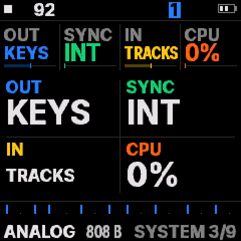
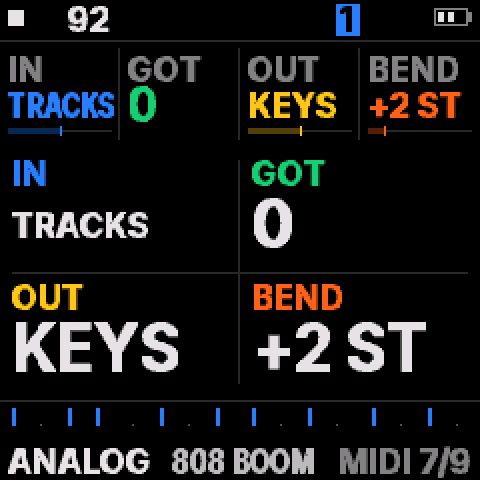
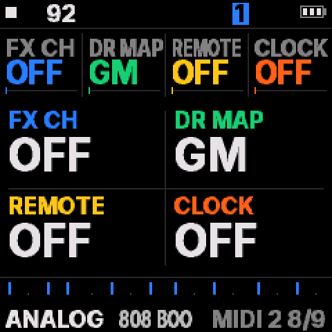
| Setting | Choices | What it does |
|---|---|---|
| IN | OFF, TRACKS, SEL | TRACKS: channels 1–4 play synth tracks 1–4, and channel 5 or 10 plays the drums. SEL: every channel plays the selected track. |
| OUT | OFF, KEYS, SEQ | KEYS sends what you play. SEQ also sends the sequencer and the arpeggiator. |
| SYNC | INT, EXT | EXT follows the tempo of incoming MIDI clock. |
| CLOCK | OFF, OUT | OUT sends MIDI clock, so other gear follows the FM-1's tempo. |
| BEND | Semitones | The pitch-bend range |
| GOT | A count | Counts incoming MIDI messages. Use it to check that a cable works. |
| DR MAP | GM, PADS | Which notes play the drums: General MIDI drum notes, or notes 36–51 for the 16 pads in order |
| FX CH | OFF, 1–16 | Notes on this channel play the punch-in effects, as if you held FX and the matching key |
| REMOTE | OFF, 1–16 | CC 102–115 on this channel press the FM-1's 14 buttons |
MIDI LEARN
Control SLOOP's values from a MIDI controller's knobs. Set up and manage MIDI LEARN in the editor's LIVE and Settings tabs. To forget every learned control, open the menu's SYSTEM section and turn MIDI LEARN CLEAR right.
USB audio
Over USB, the FM-1 is also an audio interface: record it straight into your computer. In the menu's AUDIO section, set USB AUDIO to MASTER to follow the MASTER knob, or FULL to always send the full level. The editor's LIVE tab can record your set as a WAV file.
Advanced
Web editor
The editor runs in Chrome or Edge on a computer, with the FM-1 connected by a USB data cable. Open the editor and press Connect. Each card has a ? that explains it, and view: essentials hides the advanced controls.
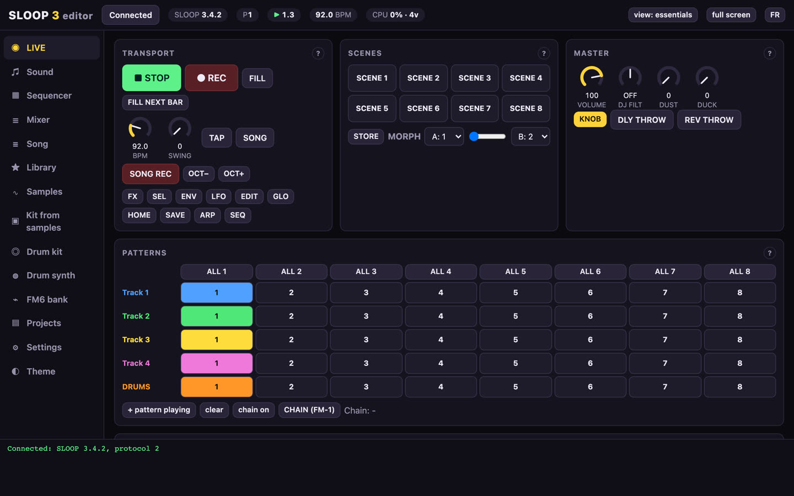
| Tab | Use it to |
|---|---|
| LIVE | Perform: switch patterns, morph between 8 mix scenes, play punch-in effects, run a set list, and record the set as a WAV file |
| Sound | Edit every value of a track's sound as knobs, compare A and B, copy, paste and randomize |
| Sequencer | Draw notes in a piano roll, set velocity, conditions, ratchets and locks, and import or export MIDI files |
| Mixer | Set levels, pans, drive and sends, and the shared delay, reverb and chorus |
| Song | Edit the song line by line |
| Library | Name, file and reorder your 32 sounds and 16 favorites |
| Samples | Load, trim, record and slice your own samples |
| Drum kit, Drum synth | Tune kits, and build your own synthesized kits |
| FM6 bank | Load and edit DX7 voices |
| Projects | Back up, restore, and keep projects as files |
| Settings, Theme | Change every setting from the menu and MIDI pages, and design your own screen colors |
Workflows
- Import a MIDI file: on the Sequencer tab, import a
.midfile onto the selected track, then tidy it with QUANTIZE. - Design a sound fast: on the Sound tab, press RANDOM, keep what you like in A, try again in B, and compare.
- Play a set: on the LIVE tab, add your
.s3pproject files to the set list. CUE loads one at its tempo, and GO plays it. - Make your own theme: design colors on the Theme tab, then choose YOURS in the menu's SCREEN section, under COLOR.


Space play or stop, Shift+R record, Shift+1–8 switch every track's pattern, ← → track, ↑ ↓ octave, F fill, Esc stop all notes. The computer keyboard plays the FM-1's keys.
When the editor sends a project, sample or bank, the FM-1 shows EDITOR BUSY and doesn't save or load until it's done. Keep the cable connected until the transfer ends.
Reference
Every page
Each button's pages, in the order you reach them by tapping it. The knobs column lists KNOB 1 to KNOB 4.
| Button | Page | Knobs |
|---|---|---|
| EDIT | EDIT 1, EDIT 2 | The engine's eight values. See Sound engines. |
| FILTER (ANALOG only) | TYPE, CUT, RES, KTR | |
| VOICE | VCE, GLIDE, GLMOD, PRIO | |
| VOICE 2 | TRIM, DTUNE, PAN, MUTE | |
| SOUNDS | CAT, PAGE, MOVE, FAV | |
| Drums: DRUMS, KIT, SOUND | SOUND, STEP, HIT, LEVEL · KIT, LEVEL, REVERB, PAN · SOUND, TUNE, DEC, LEVEL | |
| FX | FX | DST, CHO, DLY, REV |
| FILTER | FILT | |
| SLICER | SLCR, PAT, RATE, DEPTH | |
| INSERT | TYPE, then DRIVE, TONE, LEVEL · BITS, RATE, LPF · RATE, DEPTH, FDBK (by type) | |
| INSERT 2 | MIX | |
| DLY | TIME, FDBK, COLR, MIX | |
| REV/CHO | SIZE, DAMP, CRT, CDP | |
| ENV | ENV | ATK, DEC, SUS, REL |
| ENV DEST | FLT, PIT, SHP, SYNC | |
| LFO | LFO | RATE, WAVE, PHS, FADE |
| LFO 2 | SYNC, TRIG, POL | |
| LFO DEST | PIT, FLT, SHP, AMP | |
| SEL | SEL | ROOT, SCL, QNT, CHORD |
| SEL 2 | TRANS, STRUM, VLEAD | |
| ARP | ARP | MODE, RATE, OCT, GATE |
| ARP 2 | SWG, PROB, HOLD, ORD | |
| SEQ | NOTES | STEP, NOTE, LEN, FORCE |
| PATTERN | LEN, DIV, SWG, GATE | |
| SONG | LINE, PAT, BARS, LINES | |
| GLO | GLOBAL | BPM, SWING, CLICK (OFF, REC, ON) |
| MASTER | DUST, DUCK, FILT, ROLL | |
| SYSTEM | OUT, SYNC, IN, CPU (load) | |
| DRUMS | CH, LVL, REV, DLY: the drum track's MIDI channel and mix | |
| TEXTURE | SRC, LEVEL, TONE, MOVE | |
| TEXTURE 2 | RATE, WHEN, DUCK | |
| MIDI | IN, GOT, OUT, BEND | |
| MIDI 2 | FX CH, DR MAP, REMOTE, CLOCK | |
| REC | TRACK: STOP or KEEP recording when you change track. START: NOTE or CLICK. | |
| SAVE (from a sound page) | PRESETS | SOUND, ENG, —, FAV |
| USER | SLOT, LOAD, ERASE, SAVE: your 32 sounds | |
| PATTERNS | PAT, ERASE, LOAD, SAVE: turn a knob right twice to confirm | |
| TOOLS | CLRSQ (clear the pattern), INIT (reset the sound), —, NEW (new project) | |
| SAVE (on TRACKS) | SONG 1/3 | The pattern keys. KNOB 1 right: copy the track's sound to its 8 patterns. |
| SONG 2/3 | LINE, PAT, BARS, LINES | |
| PROJECT 3/3 | SAVE, NEW, LOAD |
Reference
Glossary
| Arpeggiator | Plays the notes of a held chord one at a time, in rhythm |
| BPM | Beats per minute: the tempo |
| Chain | Patterns set to play one after another, then repeat |
| Condition | A rule that decides when a step plays, such as 1 OF 4 or 50 % |
| DIV | How long one step lasts. 1/16 means a sixteenth note. |
| Engine | The kind of synthesis behind a sound: analog, FM, sample and others |
| Envelope | How a note's volume, or another value, rises and falls over time |
| Fill | Steps that play only while you play a fill, for drum fills |
| Gate | How long a note sounds within its step |
| Kit | The drum track's 16 sounds |
| Layer | What a button does while you hold it: the keys and knobs get new jobs |
| LFO | Low-frequency oscillator: a slow wave that moves a value up and down |
| Lock | A sound setting with its own value on one step |
| Nudge | Moving a note slightly off the grid, for feel |
| Overdub | Recording on top of what's already there |
| Pattern | One loop of steps for one track, with its own sound. Each track has 8. |
| Polymeter | Tracks with different pattern lengths that drift apart and meet again |
| Punch-in effect | An effect that plays only while you hold a key |
| Quantize | Moving notes to the nearest step |
| Ratchet | A note repeated 2 to 4 times within one step |
| Send | How much of a track goes to a shared effect |
| Song | A list of lines that plays patterns in a fixed order |
| Step | One slot in a pattern; by default, a sixteenth note |
| Swing | Delaying every second step for a shuffled groove |
| Track | One instrument part. SLOOP has 5. |
Appendix
Install SLOOP 3
You need the FM-1, a USB data cable (some cables only charge), and Chrome or Edge on a computer.
- Open the installer at isod89.github.io/sloop3-fm1. It guides you through five steps.
- The installer checks for m-bootloader, a small safety program. It checks the firmware before it starts and opens a recovery menu if an install fails. If it's missing, install it once with M-Flasher, which backs up your FM-1 first.
- Switch the FM-1 off, then on while holding PLAY. Choose MIDI MODE, connect USB and press Connect.
- The installer backs up the FM-1's whole memory to a file. Keep it.
- Press Install. It takes about a minute, then the FM-1 restarts on SLOOP 3.

The installer erases nothing until it has checked the whole package. If an install stops halfway, the FM-1 opens m-bootloader's menu at the next start: install again.
Rescue and recovery
| Problem | Do this |
|---|---|
| The project won't open, or SLOOP crashes at start | Switch on while holding OCT− (RESCUE). Press PLAY to start an empty project; SLOOP keeps your saved one. To bring it back, hold HOME and press key 1. |
| You want to install again, or an install stopped | Switch on while holding PLAY, choose MIDI MODE, and run the installer. |
| Buttons or knobs respond wrongly | Switch on while holding OCT− and OCT+ to calibrate them. |
| Drums sound thin on the speaker | Open the menu, go to AUDIO, and turn SPEAKER LOWCUT on. |
| The battery is low | The last of the three bars in the top-right corner blinks red below 15%. Connect USB to charge. |
| The sound cuts out with CPU OVERLOAD | Check that 2ND CORE is ON in the menu's SYSTEM section, and play fewer notes at once: set big pads to MONO, or use fewer UNI voices. |
Coming from SLOOP 2.8
SLOOP 3 plays like SLOOP 2.8.5: the same buttons, layers and gestures, with a new sound engine, a fifth track (a fourth synth), 8 patterns per track and up to 128 steps. At the first start, SLOOP 3 reads your SLOOP 2.8 sections, sounds, samples and settings without changing them. To go back, restore the backup you made with M-Flasher before installing. The full changes guide has the details.